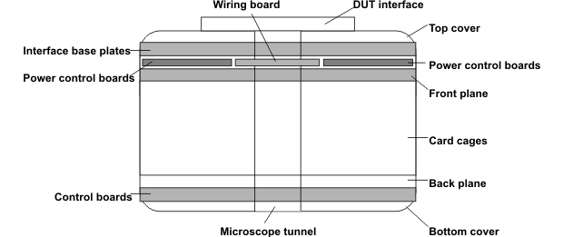

Overview of test head electronics
The test head is the heart of the V93000 test system. The V93000 features four test head sizes: large, small, compact, and the A-test head.
The test head comprises all test system electronics and additional analog modules. The components are water-cooled to keep all important specifications stable. The key functions of the test head electronics are:
- DC/DC conversion and distribution of supply voltages
- Internal communication via data bus, address bus, and control bus
- Communication clock generation and distribution
- Master clock generation and distribution
- Supplying power to the DUT
- Making channel measurements
The graphic shows a very simplified model of a test head.

Functional changes
- Introduced before SmarTest 6.3.2